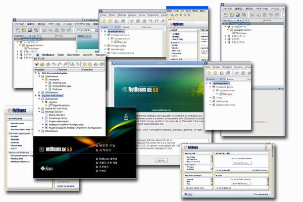
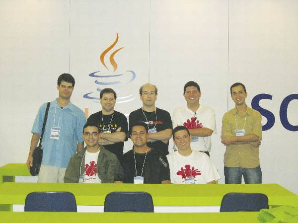
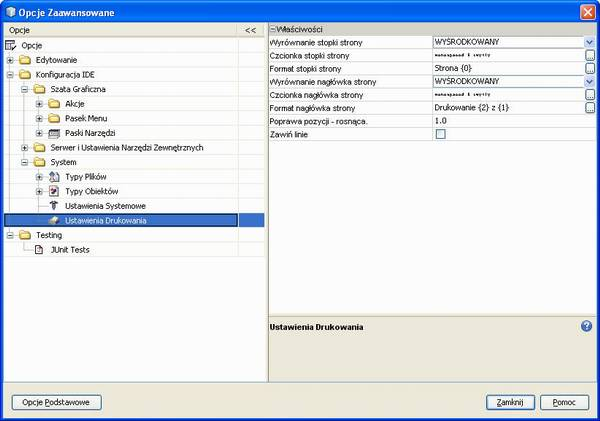
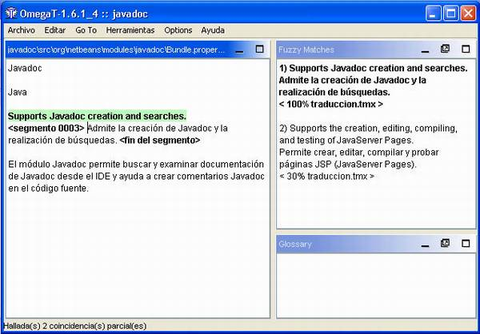

The greatest asset NetBeans has is its community. They are the end-users who contribute to its excellence by giving back to the product in so many ways. One community group is making a big difference by bringing NetBeans to the non-English speaking world. Developers with multilingual skills contribute translations, consult on terminology, and offer their technical expertise to deliver the IDE to China, Brazil, Russia, Indonesia, Belgium, Panama, Burkina Faso... In short, they reach out to developers on nearly every continent of the globe.
“Participating in this community is a way to help spread NetBeans among Spanish-speaking developers and students. It has also allowed me to meet and be a part of a translation team that includes members from other countries such as Colombia, Mexico, Spain, Argentina, Cuba, Guatemala, Peru, Chile, Venezuela, and of course, Panama.” Aristides Villarreal, NetBeans Dream Team member and PanamaJUG founder
What follows is a history of how the project started and where it’s going; who the pioneers were; some problems encountered and how they were solved; and how to participate or get started translating NetBeans into your language.
How did it all start?
A long way back, at the time of NetBeans version 3.4 or 3.5, a couple of motivated NetBeans aficionados realized that the tool had the potential to reach and benefit a much wider user group if it were translated into languages other than English. That’s how the TranslatedFiles (nblocalization.netbeans.org/) community project got started. It was born out of the vision of Vincent Brabant (now NetBeans Dream Team member and Java Champion) and Maxym Mykhalchuk, who produced French and Russian versions, respectively. At version 4.0, Dutch-speaking Java Champion Manfred Riem joined the effort, adding another language to the mix.
Since that time, modules of the NetBeans IDE 5.0, 5.5, or 5.5.1 have been translated into Albanian, Simplified and Traditional Chinese, Azerbaijani, Czech, French, German, Spanish, Korean, Dutch, Russian, Brazilian Portuguese, Swedish, Indonesian, Italian, and Japanese.
“I am a free software fan, and NetBeans offers many qualities I was looking for in an IDE: it’s intuitive, productive, extensible, has a well-organized community behind it, and the support of a company that likes open source. I’ve been using NetBeans for years and want it to be the best and most popular IDE in Burkina Faso.” Nacer Adamou Saidou, Network and Systems Engineer
Now, with the launch of NetBeans 6.0 translations, contributors from new languages such as Bulgarian, Turkish, and Polish have recently joined the project. Figure 1 gives a hint of the various translated versions of NetBeans IDE releases.

Figure 1.
NetBeans 5.0, 5.5, 5.5.1 and 6.0 in Simplified Chinese, Portuguese, Italian, Korean, Albanian, Japanese, Russian, French and German
Who is carrying on the legacy?
The Software Globalization business unit at Sun joined the project around NetBeans 4.x in order to support the Japanese and Simplified Chinese versions. Translations were added for Help files, tutorials, and product and web documentation. With each new version of NetBeans, more and more community members with linguistic skills joined the project and grew the number of languages being worked on. Over time, translation contributions were being received for the various netbeans.org community pages as well as product documentation.
Thanks to the strong influence of SouJava, Brazil’s largest Java User Group, a Brazilian Portuguese team expanded this year to be the largest in membership size. This led to a pioneering collaboration between Sun translators and the Brazil community contributors. A highly-motivated and dedicated team of in-country developers, translating during their spare time, succeeded in releasing a high-quality NetBeans 5.5 in Brazilian Portuguese on the same schedule as the official Sun multilingual version. Figure 2 shows a core set of the team.

Figure 2.
Some Brazil team members in attendance at Sun Tech Days São Paulo
To get a feel for the people behind the scenes, let’s take a closer look at some of the teams.
• German – Whenever Ruth Kusterer isn’t doing her day job as a member of the netbeans.org web team, she’s recruiting new members to the German localization group and helping in the translation, review, and cvs commit activities, alongside Peter, Holger, Jake and others. The half dozen or so members hail from Germany, Austria or Switzerland, and have contributed translations for the IDE as well as the UML module.
• Spanish – The Spanish-language team goes back a couple of releases, even before Argentinean Diego Gil and Spaniard David Álvarez León created the Spanish mailing list. More recently, the PanamaJUG, under the leadership of Aristides Villarreal, has been instrumental in growing the Spanish-language community throughout Latin America and Spain. A Spanish-language version has been released for NetBeans 5.5 and 5.5.1; NetBeans 6.0 Spanish is in progress.
• Polish – The Polish team is one of the newest localization groups. Magda Niedzwiecka Goldyn recently joined Sun and started immediately making contacts with universities and Java User Groups in Poland. She created a NetBeans discussion list (nbdiscuss_pl@netbeans.org) and met a number of enthusiastic Polish subscribers, like Paul, Jacek, Leszek and others, who were already organizing to start a translation effort for NetBeans 6.0. Figure 3 shows a translated NetBeans 6.0 dialog.

Figure 3.
Polish translation of NetBeans 6.0 Advanced Options window)
What bodes for the future? As government entities and public universities around the world migrate to open source software, we are sure to see an increased interest in new localized versions for NetBeans. With each new release, teams expand and the number of languages grows.
Why do they contribute?
If joining and contributing to a project requires a lot of extra time outside work, studies, and home life, why do people do it? Numerous reasons can be cited. Some people enjoy the creative and challenging process of developing software; while others are interested in building a reputation and expertise in related technologies. And of course, community affiliation compels people to seek association with like-minded individuals who enjoy sharing ideas and experiences, and building communities and friendships.
“Translating NetBeans to Bahasa Indonesian, will help people learn to use the IDE more easily in our country. There is increasing attention to NetBeans in Indonesia. In a developing country with more than 230 million population, NetBeans’ contribution is important for us to acquire new technology without great cost.” Ibrahim F. Burhan, Information Technologist for an Indonesian mining company and NetBeans user since version 3.5
When asked about their reasons for participating in these community projects, some TranslatedFiles contributors said they were strongly committed to the free and open-source software ideology. Others believe that it is only fair to give back to a community from which one has derived benefits.
Most would agree that making the tool more accessible to developers – rendering it in their native languages – is a key rationale for joining the project. For example, translating, at a minimum, the NetBeans Platform allows developers to write modules and build rich-client applications on top of a localized version of the Platform. The application is then ready to be deployed in the native language.
Henrique Meira said it best in a motivational e-mail to his Brazilian team members, when he enumerated the benefits of contributing to NetBeans 6.0 translations: “We have Sun’s management support and free access to worldwide events, technical assistance and a social community, and awards are given to collaborators – but most importantly we give back to NetBeans because of its excellence.”
What problems do they face?
Time is the single most difficult constraint that all the contributors face. It is assumed that everyone participating is a full-time developer, employee, student, or maybe professor with jobs, families and a social life. That means most of the work has to be accomplished in between commitments. As is the case in many collaborative projects, the more members one can bring to the project, the more workload that can be spread over a larger pool of people, so that no single individual feels responsible for making or breaking the project.
This leads to a second challenge: how to recruit new team members and keep them interested in the project. One or two team members usually volunteer to take on a leadership role, or are nominated by the other members. They are the ones who organize the work, create instructions and make sure all of the tasks are assigned. And they come to understand the importance of their role in keeping a team connected, encouraged and interested in contributing something for which there is no tangible reward.
How to ensure an acceptable level of product quality is a third challenge, especially when there is more than a handful of team members or a high turnover of contributors. Writing style and terminology usage need to be consistently maintained across all components and modules of the product. One way to achieve this is by using translation editing tools, such as OmegaT (see the box “Maximizing translation reuse”), and sharing the translation memory output among all team members.
Maximizing translation reuse |
Imagine that each time there is a new version of NetBeans you have to translate all the messages and user interface from scratch. That doesn’t seem like such a problem until you realize that you’ve seen many of these messages before, or perhaps that other members of your translation team are coming across the same set of messages as you are – and possibly making different translations of the same items. The good news is that the old translations can be reused or shared in new versions. One solution is to make use of translation memory tools. These tools store the bilingual versions of translated segments and allow you to retrieve them later when translating software messages or documentation that contain the same or similar segments as previous versions. A segment is a unit of text divided at the sentence level; most tools have the option of adjusting segments to the phrase or paragraph level too, depending on the requirements of the project. One of the most popular translation editing tools for open-source translation projects is OmegaT (omegat.org), an open-source application written in Java. As the translator works, the tool will search the database for matching pairs of segments. When a match is found the translator is offered the option of accepting or rejecting one or more previous translations. An example can be seen in Figure B1. An English segment is highlighted in green on the left side. The tool has found two possible matches in the Spanish translation database. One match is exact or 100%. The second is a fuzzy match, or 30% match between the old and new English strings.  There are many benefits of using translation memory tools. If substantial matches are found from previous translations, then less time is required to localize the product. This is because translators only have to handle a segment once, assuming it is repeated elsewhere within the same product, across other products, or in subsequent releases. Moreover, the translators do not need to be familiar with a wide range of file formats, nor do they need to own the software for processing them. For example, you might need a number of different editors or word processors to be able to process formats such as HTML, DOC, XML, etc. The translation memory tools convert these to a standard format that can be easily read by a number of translation editing tools. Finally, a high level of quality and consistency is maintained when translators can share and improve on terminology across many related projects. |
Additionally, Sun shares any existing style guides and term databases with the community. The contributors need to be in constant dialogue, so they use mailing lists in their language or the NetBeans collaboration module to discuss discrepancies and doubts. Team activities, progress, and decisions are documented on team wiki pages. And those with more linguistic and technical expertise take on the role of reviewing the translations of other less-experienced contributors, or provide linguistic consulting.
How to participate
If you are inspired to get involved in localizing the NetBeans IDE, the TranslatedFiles project home page explains how to get started. The first step is to subscribe to the project mailing list, introduce yourself to the other contributors, and check if a team for your language already exists. (Before you are granted commit rights to the workspace, you will need to sign and submit a Contributor Agreement.)
“I like to participate in the project because it’s an opportunity to get to know new people from Brazil and other countries. Exchanging experiences always improves our technical and personal skills. People feel proud to take part.” Jefferson Prestes, Brazilian contributor since version 5.0
If translations are available from a previous version, instructions outline how to migrate these from one version to the next, so that an open-source translation editor can be used to leverage and preserve the reusable translation memory. The Sun engineers prepare the localization kits, which consist of the localizable elements – .properties, .xml and .html files. Once the translations are completed, reviewed by others on the team and committed to the cvs, it is time to test and verify the localized strings. The Sun Build Engineering team will eventually make weekly development builds available on the netbeans.org site for review and testing purposes. It’s also possible to build a local version of the localized IDE when official builds are not yet available (see the box “How to build a localized NetBeans 6.0”).
Building a localized NetBeans 6.0 |
Once the translations of the message files are completed, they will need to be committed to the cvs and then integrated into the build environment. At this point, it is important to validate the quality, accuracy, and completeness of the translated strings, by reviewing them in the context of the actual product. Development builds for testing might not be available on netbeans.org until later in the development cycle, but contributors can still build a local version with the translations, as follows. Before beginning, make sure that Apache Ant 1.7, JDK 1.5 and a cvs client are installed on your local machine. Then set up your environment and checkout the NetBeans source files from the cvs (see wiki.netbeans.org/wiki/view/WorkingWithNetBeansSources for details). We’ll use BUILD_HOME to refer to the top-level directory. You must build the entire IDE before you can build the localized version: % cd BUILD_HOME/nbbuild The NetBeans IDE will be built under nbbuild/netbeans. You can start NetBeans from nbbuild/netbeans/bin/netbeans. Next, you need to checkout translatedfiles/src from cvs (the checkout steps in the Wiki mentioned above will not grab them): % cd BUILD_HOME If the translated message files (HTML, XML, properties, etc.) have been integrated already into the translatedfiles/src directory of the cvs, you can use them as they are. If you prefer, however, to validate and check your translations before integrating them in to the cvs, then make sure to put them into the translatedfiles/src directory on your local machine where you will do the local build. The next step is to build the localized % cd BUILD_HOME/nbbuild Here is an example using “ja” (for Japanese). % ant -Dlocales=ja build-nozip-ml After the build process is done, the *_<lang>.jar files will be created under the nbbuild/netbeans directory. Now it’s time to start the localized version of NetBeans: % BUILD_HOME/nbbuild/netbeans/bin/netbeans If your operating system’s locale is different from the locale in which you will run NetBeans, use the - -locale option to specify the language: % BUILD_HOME/nbbuild/netbeans/bin/netbeans --locale <language[:country[:variant]]> Here is an example using Brazilian Portuguese: % BUILD_HOME/nbbuild/netbeans/bin/netbeans --locale pt:BR You can now proceed to test the translations in the localized build environment. If there are multiple team members for your language, you can distribute the *_<lang>.jar files to the other team members. They’ll just need to unzip these files into the NetBeans installation directory. |
There are other ways to contribute translations, especially for those who have a particular interest in website content or product documentation. The netbeans.org community page for localization (netbeans.org/community/contribute/localise.html) lists a variety of opportunities for submitting translations. The most visible pages to contributors are the community page translations (netbeans.org/community/contribute/localisation-status.html). Contributors are continually sought to help keep the twenty-eight languages in sync with the regular updates of the English release.
Additionally, the community docs project (wiki.netbeans.org/wiki/view/CommunityDocs) offers the possibility to contribute content in English or other languages. Community members have submitted translations of tutorials and other NetBeans products and release documentation. They have also created original flash demos, white papers, and articles in various languages.
Three NetBeans portals exist currently in languages other than English: ja.netbeans.org, zh-cn.netbeans.org and fr.netbeans.org. You can contribute original or translated content to these sites to spread knowledge about NetBeans to developers in countries or communities where these languages are spoken.
All of these projects are ways to contribute to NetBeans as the IDE of choice worldwide. It is a way to share your skills and expertise with others, and help reach developers who might not be aware of the great features offered by NetBeans. The benefits of contributing to the TranslatedFiles translation project are numerous. You can make the IDE more accessible to international developers, and, in the process, enjoy the camaraderie of sharing knowledge, experiences, and social interaction with other people who love NetBeans and believe in the
open source ideology.
Links |
About the Brazil team and NetBeans release 5.5 The Traditional Chinese team and NetBeans release 5.5 Article about NetBeans Russian community contributor and TranslatedFiles founder, Maxym Mykhalchuk Article about the Spanish and German teams and NetBeans release 5.5.1 NetBeans localization/translation community project Article about the Indonesian NetBeans Users Group and the NetBeans localization efforts of NUG members Ibrahim F. Burhan and Thomas Edwin Santosa |
Janice Campbell is a Globalization Program Manager at Sun Microsystems, Inc. For the last year and a half, she worked with a Sun team of localizers in Japan, China and the Czech Republic, and with an ever-changing and growing team of community contributors from all parts of |
{kind=link}
{kind=link}
{kind=link}
{kind=link}